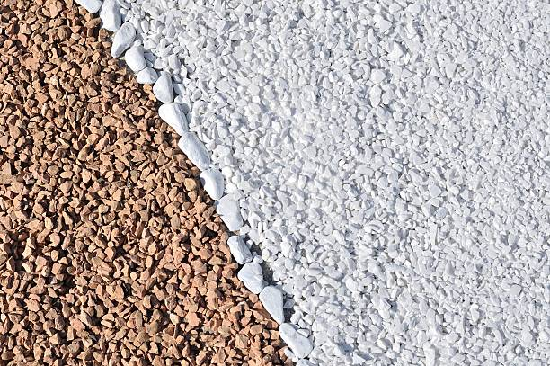

Pea gravel in Lowell Michigan is perfect for adding texture to gardens, walkways, and patios. Get a natural, stylish finish while ensuring excellent drainage and durability for years to come.
Click Here To Call Us (877) 848-1711At Pea Gravel, we provide premium pea gravel services for residential and commercial projects across Lowell Michigan . Whether you're looking to create a beautiful driveway, a serene garden pathway, or a functional drainage solution, our pea gravel is the ideal choice for all your landscaping needs. Known for its smooth texture and rounded shape, pea gravel offers excellent drainage and low maintenance, making it a favorite among homeowners and contractors alike.
Why Choose Pea Gravel in Lowell Michigan ?
Pea gravel is a versatile and cost-effective material that can be used in a variety of applications, from decorative walkways to effective erosion control. Its unique appearance, with small, smooth stones in earthy tones, adds both visual appeal and functionality to any project. Additionally, pea gravel is long-lasting, weather-resistant, and easy to install, making it a popular choice for outdoor landscaping in Lowell Michigan .
Our team ensures that you receive the highest-quality pea gravel, delivered and installed with precision. Whether you're enhancing your garden or building a durable driveway, our pea gravel is designed to withstand the toughest conditions while maintaining its beauty.
Transform Your Property with Pea Gravel in Lowell Michigan
At Pea Gravel, we pride ourselves on offering top-notch landscaping materials tailored to your specific needs. Contact us today to get started on your next project in Lowell Michigan . Let us help you create a landscape that's both functional and stunning with the best pea gravel in the area!
Residential & commercial Pea Gravel
Quality services at affordable prices
Immediate 24/ 7 emergency services

Pea gravel is a highly versatile and practical landscaping material, especially ideal for the unique climate of Lowell Michigan . This small, rounded aggregate is not only aesthetically pleasing but also offers several benefits that make it a top choice for homeowners and landscapers in areas with hot, humid, and rainy weather, like Lowell Michigan .
One of the primary reasons pea gravel is perfect for Lowell Michigan 's climate is its excellent drainage capabilities. During Miami's frequent rain showers, water easily flows through the gaps between the smooth, rounded stones, preventing puddling and erosion in your yard. This feature makes pea gravel an excellent option for pathways, driveways, and garden beds, ensuring your outdoor spaces remain functional and dry.
Additionally, pea gravel’s natural composition helps regulate soil temperature. In Lowell Michigan 's hot climate, it provides a cool surface for walking and gardening, reducing the need for constant maintenance. It also retains moisture in garden beds, helping plants thrive during the dry season by conserving water, which is crucial for sustainable landscaping in such a climate.
Another advantage of pea gravel is its ability to withstand extreme weather conditions. Its small size and compact nature allow it to resist shifting and displacement during strong winds or heavy storms, which are common in Lowell Michigan . With minimal upkeep, pea gravel provides a durable and attractive surface for your landscaping needs.
Whether you are designing a patio, pathway, or drainage solution, pea gravel is an ideal choice for Lowell Michigan homes, offering both beauty and practicality for various landscaping applications.
Residential & commercial Pea Gravel
Quality services at affordable prices
Immediate 24/ 7 emergency services
Proper drainage is critical for any commercial property, and pea gravel can provide an effective solution to manage water runoff. Using pea gravel in drainage systems ensures effective water flow while reducing the risk of flooding and erosion on your property.
, we are the experts in setting up commercial drainage systems that incorporate pea gravel. Our knowledgeable staff can assess the specific needs of your property to determine the optimal layout and materials for the best drainage performance.
Choosing us for your drainage solutions ensures you are working with a team that values quality and reliability. We offer lasting solutions that protect your investment while promoting a healthy environment on your commercial property.

Creating stunning garden displays requires attention to detail and quality components. Pea gravel is an exceptional choice for showcasing plants, artwork, or features while enhancing aesthetics and providing excellent drainage.
In Lowell Michigan our team specializes in designing captivating garden displays utilizing pea gravel as a foundational material. The natural look of pea gravel complements various plants and decorative elements, allowing your exhibits to shine.
Our commitment to quality ensures that we provide only the best materials that will stand the test of time, whether you are showcasing a seasonal display or a permanent art installation. Choose us to transform your garden into a stunning visual experience.

Erosion control is vital for maintaining the integrity of commercial properties, and pea gravel can be an effective solution. Its variety of sizes allows for strategic placement, assisting in stabilizing soil and preventing erosion in vulnerable areas across your property.
, we provide erosion control solutions that leverage the benefits of pea gravel to protect your land from deterioration. Its permeable nature allows water to drain through effectively, mitigating risks from heavy rain and maintaining the landscape's health.
Choosing our services means selecting a knowledgeable partner dedicated to safeguarding your property’s value. We offer tailored erosion control strategies that ensure your landscape remains intact, enhancing both functionality and aesthetic appeal.

Efficient drainage systems are crucial for property sustainability, and pea gravel plays an important role in their effectiveness. Its structure opens pores for water movement, preventing pooling and encouraging expedited drainage in various settings.
, we design and install pea gravel drainage systems tailored to your land's specific needs, whether they are simple or complex. Integrating the right gravel can mitigate issues related to water management and soil integrity while enhancing the overall landscape.
Choosing us means you partner with experts who understand the essential dynamics of drainage. We are dedicated to creating solutions that foster sustainability, ensuring your property benefits from optimal drainage performance.

Creating beautiful ponds and water features elevates the nature experience in any property, and pea gravel serves as a lovely base and border for these installations. Its natural appearance aligns perfectly with aquatic settings, enhancing the aesthetic while providing functional benefits.
In Lowell Michigan using pea gravel around ponds ensures proper drainage and reduces the risk of soil erosion. It's also an excellent choice for decorative purposes, adding texture and interest to the design surrounding water elements.
By collaborating with us, you access a wealth of expertise in creating pond and water features that harmonize with your landscape. Our focus on quality materials and customer satisfaction ensures your vision for tranquil outdoor spaces becomes a reality.
For those looking to install artificial turf, using pea gravel as infill can enhance the functionality and appearance of your landscape. This innovative approach increases drainage capabilities while providing a natural look and feel underfoot.
In Lowell Michigan pea gravel infill is beneficial for promoting airflow and moisture retention while maintaining the turf’s stability. It minimizes maintenance while keeping your landscape looking fresh and inviting throughout the seasons.
Choosing us for your artificial turf project means benefiting from our comprehensive knowledge of landscaping materials. We are dedicated to ensuring that your artificial turf serves its purpose while enhancing the overall beauty of your outdoor living space.

Driveway edging is essential for defining spaces and enhancing the visual appeal of your property. Pea gravel serves as an attractive and practical edging option, providing a clean finish while allowing for excellent drainage.
, our team specializes in creating stunning driveway designs that incorporate pea gravel edging to elevate your landscaping. By enclosing your driveway with pea gravel, you can prevent grass and weeds from encroaching while providing a decorative border.
Choosing us means opting for quality materials and expert installation from a team that values attention to detail and customer satisfaction. Elevate your property’s appearance with beautiful driveway edging that complements your style.

When it comes to creating strong concrete structures, using pea gravel in your mix can improve durability and add unique aesthetics. Pea gravel is an excellent aggregate, contributing strength to concrete while allowing for decorative finishes.
In Lowell Michigan we provide high-quality pea gravel that is ideal for mixing with concrete. Our knowledgeable staff understands the best ratios and combinations to achieve desired results, whether for residential or commercial projects.
Choosing us means you can trust our expertise in selecting the right aggregate and ensuring consistency in quality. We’re dedicated to helping you create concrete solutions that stand the test of time, enhancing your properties’ functionality and beauty.
Years Experience
Expert Technicians
Satisfied Clients
Compleate Projects
At Linda Hardware, we provide high-quality pea gravel that enhances your landscaping projects, construction needs, and more across Lowell Michigan . Our commitment to delivering the best gravel products and outstanding customer service makes us the top choice for residents and businesses alike.
Premium Quality Pea Gravel
We source our pea gravel from the finest suppliers to ensure durability, uniformity, and natural appeal. Whether you're completing a driveway, garden path, or drainage project, our gravel's versatility offers a perfect solution. It is both easy to handle and affordable, making it an excellent choice for various applications in Lowell Michigan .
Customer-Centric Approach
At Linda Hardware, your satisfaction is our priority. We understand the importance of timely delivery, reliable service, and ensuring that every order meets your specific needs. Our team is dedicated to providing expert advice and personalized support, making your purchase of pea gravel a smooth and hassle-free experience.
Competitive Pricing and Reliable Service
We offer competitive pricing without compromising quality, making it easy for you to stay within budget. With prompt delivery across Lowell Michigan you can rely on us to supply the right amount of pea gravel, right when you need it.
Choose Linda Hardware for your pea gravel needs in Lowell Michigan . Our exceptional quality, service, and value set us apart as the leading supplier in the area.
In today's world, ensuring your driveway is both functional and aesthetically pleasing is more important than ever. Pea gravel is an exceptional material for driveways, offering a durable, cost-effective, and visually appealing solution for homeowners . Unlike traditional asphalt or concrete, pea gravel is permeable, allowing water to drain naturally, which helps prevent erosion and puddling.
When opting for pea gravel, you'll benefit from a variety of color options, creating a unique curb appeal that distinguishes your home. Additionally, pea gravel is easy to install and maintain, making it a popular choice for DIY enthusiasts. Our expertly sourced pea gravel ensures that you receive the best quality stone that resists degradation and stands the test of time.
But why choose us? We advocate for sustainable practices, ensuring our gravel is sourced responsibly. Our dedication to customer satisfaction guarantees that we provide not only premium materials but also expert guidance throughout your driveway project. Whether you're looking to enhance your home's value or simply want a reliable driveway solution, our team is here to help every step of the way.
Landscape design can significantly impact the overall look and feel of your outdoor space. When it comes to innovative and versatile landscaping solutions, pea gravel is an excellent choice. Whether you're looking to create a zen garden, a playground for your kids, or a serene retreat, pea gravel offers endless possibilities.
With its aesthetic appeal and landscaping benefits, our pea gravel options are perfect for pathways, edging, ground cover, and decorative accents. We pride ourselves on being at the forefront of landscape trends . Our team is dedicated to helping you conceptualize your landscaping vision with quality materials and expert advice. Free consultations are available, allowing you to explore various styles that utilize our pea gravel.
By choosing us, you gain access to professional landscape designers who understand the unique climate and environmental conditions of Lowell Michigan . We can help transform your outdoor area into a beautiful, functional space that you'll love for years to come.
Establishing walkways and pathways is essential for guiding visitors and enhancing the flow of your residential or commercial space. Pea gravel is an ideal choice due to its natural beauty and excellent drainage properties. At Pea Gravel, we provide expertly designed pea gravel pathways that enhance accessibility while adding a touch of elegance to your outdoor environments.
Our pea gravel walkways are not only aesthetically pleasing but also practical. The stones create a stable and customizable path, which can be shaped according to your preferences and landscape layout. Whether you desire a meandering path through your garden or a straight walkway in your yard, our high-quality pea gravel can accommodate any design.
Installation is simple with pea gravel. Our team ensures that each step is taken care of—from site preparation to the final installation—allowing you to sit back and admire your new walkway. Additionally, pea gravel encourages proper drainage, preventing water pooling and making your pathways safe and walkable regardless of weather conditions.
With Pea Gravel, your pea gravel walkways are crafted with precision, ensuring they are durable and long-lasting. Choose us for comprehensive solutions that elevate your property's overall appearance and functionality.
Garden beds are focal points for many homes, and pea gravel can enhance their beauty while providing practical benefits. Utilizing pea gravel in your garden beds can help to conserve moisture, deter weeds, and provide a neat, finished appearance. It’s an incredibly versatile material that can be used in various ways, from decorative ground cover to practical soil coverage.
At Pea Gravel, we understand the dynamics of garden design . Our team can help you decide how best to incorporate pea gravel into your garden beds. Whether it's creating a low-maintenance rock garden or a refined border to your flower beds, our various options can suit any homeowner’s vision.
Pea gravel’s natural look integrates perfectly with plants, allowing the beauty of your flowers and shrubs to stand out. Additionally, it promotes better drainage, ensuring that your plants receive adequate water without drowning. Let our experienced professionals help you cultivate the garden of your dreams using the best pea gravel solutions available .
Creating an inviting patio area can significantly enhance your outdoor living space. Pea gravel is an excellent choice for patios due to its versatility, ease of installation, and elegant appearance. At Pea Gravel, we offer high-quality pea gravel options that will transform your patio into a beautiful and functional outdoor retreat.
Imagine spending warm evenings on your new pea gravel patio, surrounded by the soothing sounds of nature. The smooth stones provide a comfortable surface underfoot, and their natural variations allow you to create unique designs that reflect your personal style. Our team is skilled in designing patio layouts that maximize space and enhance the overall aesthetics of your outdoor area.
In addition to beauty, pea gravel patios are practical. They provide excellent drainage, allowing rainwater to permeate the surface, which reduces the risk of pooling and provides a more comfortable outdoor experience. Whether you want a small, intimate setting or a larger entertaining area, the versatility of pea gravel makes it an ideal choice.
Choosing Pea Gravel for your pea gravel patio means you are selecting a team dedicated to quality and customer satisfaction. We take pride in transforming your patio dreams into reality, ensuring your outdoor space is both functional and fabulous in Lowell Michigan .
Safety and fun are paramount when it comes to playgrounds, and pea gravel is one of the best materials available for playground surfaces. Its soft texture provides excellent shock absorption, reducing the risk of injuries from falls, making it a safe option for children .
In addition to safety, pea gravel is a cost-effective option that allows for good drainage and does not support the growth of weeds, keeping your playground clean and low-maintenance. Our expert team can help you design and install pea gravel playgrounds that meet safety standards while also providing a charming, natural environment for play.
We only offer the best quality pea gravel, sourced from local suppliers, ensuring it is free from debris and harmful materials. Our staff is trained in best practices for playground surface installation, ensuring your project is done right the first time. Trust us to create a safe, enjoyable playground that both kids and parents will love.
Creating a comfortable and functional space for your pets is essential for any responsible pet owner. Pea gravel is a fantastic choice for dog runs and pet areas due to its natural non-toxic composition and excellent drainage capabilities. It helps prevent muddy paws and creates an environment where dogs love to play and rest.
With its soft texture, pea gravel is a safe surface for pets, reducing the risk of injury while allowing for easy cleanup of pet waste. Our team specializes in creating custom dog runs tailored to your lifestyle and the specific needs of your pets in Lowell Michigan .
We offer a variety of pea gravel options, allowing you to choose the right base for your pet area. Whether it's a designated play area or a simple pathway, we ensure every detail is executed with care. Choose us for your pet areas, and give your furry friends a beautiful, safe, and fun environment they will love.
Transform your flower beds into stunning focal points with the addition of pea gravel. It’s an excellent mulch alternative for flower beds, providing excellent drainage while maintaining moisture in the soil. The beauty of pea gravel comes not only from its appearance but also from its ability to enhance the health and vitality of your plants.
, using pea gravel in flower beds can help prevent weed growth, making the upkeep of your garden much easier. Its unique texture and color options can also complement a wide variety of flowers, highlighting their beauty.
When you choose our services, you’re opting for eco-friendly options tailored to your garden’s needs. Our team is dedicated to helping you design flower beds that are not only beautiful but well-maintained, ensuring your flowers thrive all year long.
Rock gardens are a beautiful way to create an informal landscape that mimics nature and provides a serene escape. Pea gravel perfectly complements other stones and plants in a rock garden, adding a touch of elegance while ensuring good drainage to prevent water pooling around the plants.
Our experience in creating stunning rock gardens means we know how to blend different materials and plants harmoniously to achieve your desired aesthetic. Whether you want a modern approach or a classic rustic look, our team can help you design and install a rock garden featuring pea gravel as a key element.
Furthermore, our commitment to quality materials ensures that your rock garden will look beautiful and stand the test of time. Choose us to elevate your outdoor experience with breathtaking rock garden designs tailored to your taste and lifestyle.
As water conservation becomes increasingly important, xeriscaping provides an excellent way to create beautiful landscapes that reduce water usage. Pea gravel is an ideal material for xeriscaping, facilitating drainage and providing a versatile ground cover that complements drought-resistant plants. In Lowell Michigan homeowners can achieve a stunning landscape design while being responsible stewards of the environment.
Choosing pea gravel for your xeriscape means you'll enjoy low-maintenance beauty year-round. It helps stabilize the soil and prevents weed growth while allowing you to focus on developing a landscape that thrives with minimal irrigation.
Our team is dedicated to assisting you in creating a xeriscape that meets your aesthetic desires and sustainability goals. We provide consultation and implementation services that highlight the beauty of your outdoor space while effectively conserving water.
Making a lasting first impression starts with your business's parking lot. Using pea gravel for parking lots presents an attractive, eco-friendly alternative to traditional asphalt or concrete, creating a positive environment for employees and customers alike.
Pea gravel allows excellent drainage, which can reduce the risk of flooding and standing water, ultimately extending the lifespan of your parking lot surface. Our experience ensures that we understand local regulations and best practices to create a durable, functional, and visually appealing parking area that meets your needs.
Choosing us means you’ll receive exceptional service and high-quality materials. Our team is dedicated to delivering safety, durability, and aesthetics, making sure your parking lot enhances your business's overall appeal.
Whether hosting weddings, parties, or community events, having an inviting outdoor space is essential. Pea gravel provides an attractive, comfortable surface for event sites, allowing for excellent drainage while creating a relaxed atmosphere.
, our team can help design an event space that meets all your needs, ensuring it’s functional and welcoming. Pea gravel can facilitate pathways, seating areas, and even designated play zones for kids, all while contributing to a laid-back ambiance.
When you choose us for your outdoor event space, you’re choosing quality and creativity. Our attentive team will work closely with you to create a perfect layout that makes your event unforgettable while taking into consideration the unique aspects of your property.
In the fast-paced world of business, a reliable and attractive commercial pathway can significantly enhance the visitor experience. Pea gravel is an ideal solution for commercial pathways, providing a durable surface that supports foot traffic without compromising on style or function.
In Lowell Michigan investing in pea gravel pathways means choosing a product that fosters a welcoming atmosphere while ensuring excellent drainage and low maintenance. This adaptability makes pea gravel a practical choice for offices, shopping centers, and public venues.
When you partner with us for your commercial pathways, you receive a tailored approach that considers your branding and operational needs. We are dedicated to providing quality installations that stand out and facilitate smooth visitor flow, ensuring lasting impressions.
Business courtyards often serve as inviting spaces for employees and clients, making their design crucial. Pea gravel is an innovative material for business courtyards, offering a blend of style and function. It allows for varied landscaping options, making the area appealing while promoting an inviting atmosphere for gatherings.
At Pea Gravel, we specialize in creating and installing pea gravel courtyards that enhance the overall business environment. Understanding the importance of aesthetics and functionality, our team brings creative ideas to life through the effective use of pea gravel in courtyard designs.
Not only does pea gravel provide a visually appealing surface, but it also promotes drainage and reduces mud problems, ensuring that your outdoor spaces are both beautiful and accessible year-round. Whether you want to incorporate seating areas, decorative flower beds, or winding walkways, we bring expertise and precision to every project, enhancing your business’s appeal in Lowell Michigan .
A retail storefront is often the first impression of your business, and enhancing its curb appeal is critical for attracting customers. Pea gravel offers a unique and stylish solution for landscaping, creating visually appealing displays that draw attention to your products and services.
In Lowell Michigan using pea gravel in your storefront landscaping allows for creative designs, integrating greenery with decorative stones. Not only does it improve aesthetics, but it also aids in drainage, keeping your landscape fresh and attractive throughout the seasons.
With our team by your side, you'll receive expert guidance in selecting the right type of pea gravel to complement your storefront while ensuring practical, sustainable choices. Our commitment to customer service translates into beautiful results, helping you build a positive brand image.
Hotels and resorts rely on exceptional landscaping to create a serene and inviting environment for guests. Pea gravel offers a natural, elegant solution for various applications, from pathways to garden features, enhancing your property’s aesthetic appeal and functionality.
, we specialize in designing beautiful landscapes for the hospitality industry. Our pea gravel can help create relaxing pathways, outdoor lounges, or scenic seating areas that encourage guests to explore and unwind in nature.
By choosing us, you’ll benefit from our extensive experience in creating stunning landscapes tailored to your hotel or resort’s unique theme and atmosphere. Our commitment to quality ensures your landscaping will withstand the test of time, providing a beautiful environment for guests year after year.
Public parks and playgrounds need durable, safe surfaces that encourage community interaction. Pea gravel is a perfect solution, providing a natural look while ensuring excellent drainage and safety for children.
Our team can help design and install pea gravel surfaces that meet safety standards for playgrounds, ensuring children can play freely while parents can relax. Using pea gravel in public parks also encourages environmental responsibility with its sustainable attributes.
Our commitment to quality materials and expert installations means that your public spaces will be inviting and functional for years to come. Trust us to create safe, beautiful environments where families can create lasting memories together.
Pea gravel is an increasingly popular landscaping material for homeowners and businesses in Lowell Michigan . With its many benefits, it's no wonder that more people are choosing this versatile option for their outdoor spaces. Here’s why pea gravel is ideal for your Lowell Michigan property:
Aesthetic Appeal: Pea gravel offers a natural, beautiful appearance that complements any landscape design. Its smooth, rounded stones come in various colors, creating a visually appealing surface perfect for walkways, driveways, patios, and garden beds in Lowell Michigan .
Low Maintenance: One of the standout benefits of pea gravel is its low maintenance needs. Unlike grass or mulch, which require regular care, pea gravel doesn’t need mowing or reapplying. This makes it an excellent option for homeowners in Lowell Michigan seeking a hassle-free solution for their outdoor areas.
Durability: Pea gravel is highly durable and can withstand heavy foot traffic, rain, and other weather conditions commonly experienced in Lowell Michigan . It's a long-lasting material that requires minimal upkeep, making it ideal for both residential and commercial applications.
Affordable Landscaping: Compared to other landscaping materials, pea gravel is cost-effective. It provides a high-quality finish without breaking the bank, making it a popular choice for budget-conscious homeowners in Lowell Michigan .
Versatile Uses: From creating a beautiful path to enhancing drainage in your garden, pea gravel is incredibly versatile. It’s perfect for any landscaping project in Lowell Michigan whether you're looking to add curb appeal or improve the functionality of your outdoor space.
With its durability, aesthetic appeal, and ease of maintenance, pea gravel is the ideal choice for your Lowell Michigan property. Consider incorporating this stylish, cost-effective material into your next landscaping project.
Lowell is part of the Grand Rapids metropolitan area and is about 15 miles (24.1 km) east of the city of Grand Rapids. The city is mostly surrounded by Lowell Township to the south, but the two are administered autonomously. Lowell is situated just north of where the Flat River meets the Grand River. The city's downtown area is listed on the National Register of Historic Places as the Downtown Lowell Historic District.
To clean pea gravel, simply use a garden hose to wash off dirt and debris. For deeper cleaning, you can occasionally replace the gravel or wash it with a pressure washer.
To install pea gravel, start by leveling the ground, then lay down a weed barrier before spreading the gravel evenly. Linda Hardware can offer guidance or connect you with local professionals for installation.
Yes, pea gravel is suitable for slopes especially when used with proper edging to prevent displacement. Its drainage qualities make it a great choice for sloped areas.
Yes, pea gravel is pet-friendly and a great choice for creating safe and comfortable outdoor spaces for pets as it is soft and non-toxic.
Pea gravel is a small, rounded, smooth stone commonly used in landscaping for paths, driveways, and garden beds. It's versatile, aesthetically pleasing, and drains well, making it ideal for various outdoor projects.
Absolutely! Pea gravel is perfect for creating a beautiful, low-maintenance patio offering a natural, rustic look while allowing water to drain easily.
Yes, pea gravel helps with erosion control by promoting water drainage and preventing soil erosion on slopes and hills in Lowell Michigan .
Pea gravel is available in a variety of colors, from natural tones like brown and beige to more vibrant hues. Linda Hardware offers several color options for your landscaping needs .
Yes, Linda Hardware offers delivery services for pea gravel directly to your location . Contact us to schedule a delivery at your convenience.
Pea gravel does not attract pests and is a great choice for pest-free landscaping . It also allows water to drain properly, reducing standing water that could attract mosquitoes.
Yes, pea gravel can withstand freezing temperatures. However, it's important to ensure proper compaction and drainage to prevent shifting and freezing problems in Lowell Michigan .
Pea gravel typically ranges from 3/8 to 3/4 inch in diameter. It is smaller, rounder, and smoother than other types of gravel, making it ideal for decorative landscaping .
To prevent weeds, install a weed barrier fabric beneath the gravel and maintain a layer of pea gravel at least 2-3 inches thick for optimal results.
To prevent erosion, use edging to contain the gravel and ensure a solid base. Additionally, ensure the area has proper slope and drainage to avoid displacement.
Yes, pea gravel is a sustainable option as it is natural and durable. It doesn’t require frequent replacement, reducing waste, and it provides good drainage to prevent erosion.
Yes, pea gravel is an excellent choice for driveways in Lowell Michigan because it's easy to maintain, provides a natural look, and allows for proper drainage, preventing puddles.
Regularly rake the gravel to keep it level, and replace any gravel that gets displaced. Additionally, washing pea gravel annually helps to maintain its appearance.
Yes, pea gravel is a great, soft surface for playgrounds, providing a cushioned landing for children. Just ensure the depth is sufficient to provide safety in Lowell Michigan .
To level pea gravel, use a rake to spread the gravel evenly, and then compact it using a mechanical compactor. This ensures a smooth and even surface for your project in Lowell Michigan .
Yes, pea gravel can be mixed with other materials like sand or crushed stone to achieve the desired texture and appearance for your project in Lowell Michigan .
Pea gravel is highly durable and can last for many years with minimal maintenance, making it an excellent long-term investment for landscaping projects .
Pea gravel creates a smooth, comfortable surface for walking, provides excellent drainage, and adds a natural aesthetic to pathways making it ideal for high-traffic areas.
Yes, pea gravel is an excellent choice for drainage systems due to its ability to allow water to pass through easily, making it ideal for landscaping and foundation drainage .
Pea gravel is smaller, smoother, and more visually appealing than other gravel types, making it the best choice for areas where aesthetics and comfort matter, such as pathways or decorative features in Lowell Michigan .
The cost of pea gravel varies depending on the quantity and delivery distance. Contact Linda Hardware for a customized quote based on your needs in Lowell Michigan .
Pea gravel is an ideal material for water features such as ponds, fountains, or dry creek beds, as it helps with drainage and creates a natural aesthetic .
Linda Hardware offers high-quality pea gravel at competitive prices, with reliable delivery and expert advice to help you choose the right material for your project in Lowell Michigan .
The amount of pea gravel you need depends on the area you're covering. Linda Hardware provides a gravel calculator to help estimate how much you'll need based on your garden's dimensions.
You can order pea gravel from Linda Hardware online through our website, or by calling our customer service team for assistance with ordering and delivery to your Lowell Michigan location.
Pea gravel is suitable for driveways with moderate traffic. However, for heavy traffic areas, consider adding a stabilizer or combining pea gravel with other types of gravel for better durability in Lowell Michigan .
"Linda Hardware provided excellent pea gravel for my new patio in Lowell Michigan . The quality is unmatched, and the delivery was prompt. The staff was friendly and professional, making the entire process stress-free. I highly recommend Linda Hardware for any landscaping supplies."
Profession
"Fantastic service from Linda Hardware! The pea gravel I purchased for my garden in Lowell Michigan is of great quality and looks amazing. The staff was very helpful, and the delivery was quick. I’ll definitely use them again for my landscaping needs."
Profession
"Linda Hardware made my landscaping project effortless. The pea gravel was of excellent quality, and the delivery was fast. Their customer service was outstanding. I’m very pleased with the results and will certainly use Linda Hardware for future landscaping needs in Lowell Michigan ."
Profession